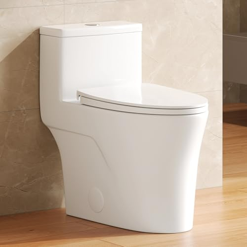
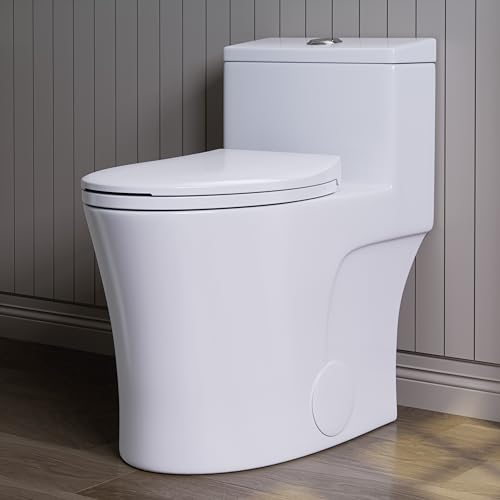
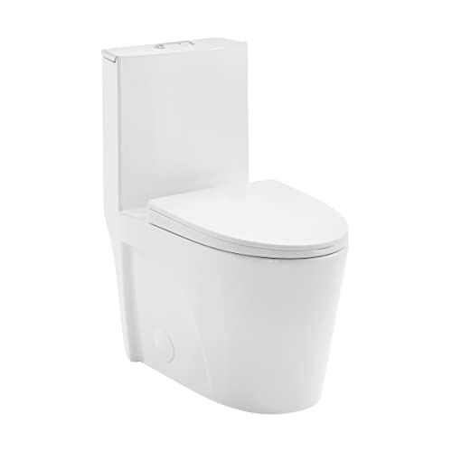
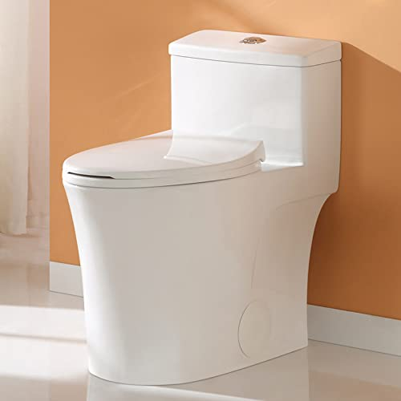
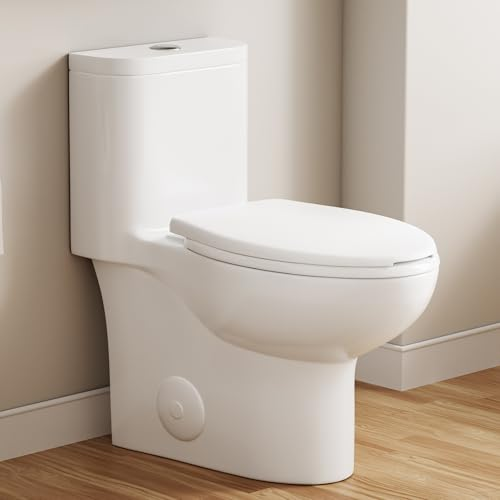
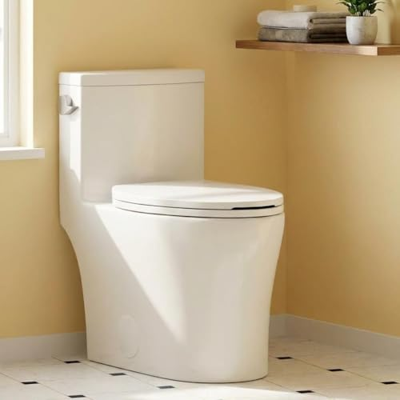

A one-piece toilet has to fit your rough-in before anything else counts.
One-piece toilets look nearly identical in a listing photo. The one that bolts down cleanly and the one that goes back in its box differ on four specs: the rough-in, the seat height, the bowl shape and the flush. We compare toilets on those points, using spec sheets, current Amazon prices and what verified owners report.
Our 7 picks, side by side
From our full comparison of one-piece toilets. Each one wins a specific job.
| Pick | Product | Price | Buy |
|---|---|---|---|
| Our Pick | WOODBRIDGEE One Piece Toilet with Soft Closing SeatComfort-height elongated one-piece with a soft-close seat included, from a brand you can actually look up | $310.99 | Check price |
| Runner-Up |  DeerValley Elongated One-Piece Toilet with Comfort Chair Seat ADA HeightADA comfort chair height, elongated, and the best value from a brand you can research | $215.00 | Check price |
| Best modern look |  HOROW T0338WM Elongated One Piece Toilet Matte WhiteMatte white, ADA height, dual-flush, the best-looking toilet on this list | $359.00 | Check price |
| Best dual-flush |  St. Tropez One Piece Elongated Toilet Dual Vortex Flush 1.1/1.6 gpf with 10"Dual Vortex flush at 1.1 and 1.6 GPF, and one of the few 10-inch rough-in options | $272.78 | Check price |
| Best compact |  HOROW T0338W Compact One Piece ToiletA genuinely compact one-piece at ADA chair height of 17.3 inches, for tight bathrooms | $249.00 | Check price |
| Budget Pick |  Sonderzone Elongated One Piece Toilet for BathroomThe cheapest one-piece we would actually put in our own home | $189.99 | Check price |
| Best comfort height |  One-Piece Toilet for Bathroom ComfortElongated one-piece with dual flush and a true 16-inch comfort height | $285.02 | Check price |
Just published
New reviews and guides go up every day.

Glendan Smart Toilet Review

DeerValley Elongated One-Piece Toilet Review

Bolina W2111D One-Piece Dual Flush Toilet Review

DeerValley One-Piece Comfort Height Toilet Review
Find the right one-piece toilet for your bathroom
Guides and reviews from across the site, grouped by the question they answer.
Rough-in, size and shape
- One Piece vs Two Piece Toilets Pros and Cons: Which Is Better?Comparison
- Best One Piece Toilet BowlComparison
- Best One Piece Toilet for Small BathroomComparison
- How to Measure Rough-In for a Toilet: The 5-Minute CheckGuide
- Best One Piece Toilets for Small BathroomsComparison
- One Piece Toilet Buying Guide: Rough-In, Height & FlushGuide
+ 12 more in all articles
Install, remove and repair
- How to Open Ido Toilet: Complete GuideGuide
- How to Open Toilet Flush: Complete GuideGuide
- How to Replace One Piece Toilet Flush ValveGuide
- One Piece Toilet Installation Cost: What You'll Really PayGuide
- How to Install a One Piece Toilet: Step-by-Step DIY GuideGuide
- How to Remove a One Piece ToiletGuide
Smart and bidet toilets
- Best Toto One Piece Toilet with BidetComparison
- Best Smart One Piece Toilets: Bidet, Heated Seat & Auto-FlushComparison
- One Piece Toilet vs Smart Toilet: Which Is Worth the Upgrade?Comparison
- Glendan Smart Toilet ReviewReview
- CANEST FC 001P Bidet ReviewReview
- Witmya Smart Toilet ReviewReview
+ 11 more in all articles
Flush, clogs and cleaning
- How to Clean Toilet Water Tank: Complete GuideGuide
- How to Clean a Toilet Seat: Complete GuideGuide
- How to Unclog a One Piece ToiletGuide
- How to Clean One Piece ToiletGuide
- Best One Piece Toilet with Powerful FlushComparison
- Best Dual-Flush One Piece Toilets: 6 Water-Saving PicksComparison
+ 4 more in all articles
Comfort height and seniors
- Best One Piece Toilet for SeniorsComparison
- Best One Piece Toilets with Soft-Close Seats: 8 Quiet PicksComparison
- Best One Piece Toilet SeatComparison
- Best Elongated One Piece Toilets: 6 Comfort PicksComparison
- DeerValley One-Piece Comfort Height Toilet ReviewReview
- Los Flexi ADA One Piece Toilet ReviewReview
+ 5 more in all articles
Budget and brands
- Best One Piece Toilet Under 500Comparison
- Best One Piece Toilet BrandsComparison
- Best Toilet in the WorldComparison
- Best One Piece Toilet on the MarketComparison
- Best One Piece Toilet to BuyComparison
- Best One Piece Toilet for the MoneyComparison
+ 35 more in all articles
How we research
What we compare
- Rough-in: 12 inches in most US homes, 10 or 14 in some, measured from the finished wall to the center of the floor bolts.
- Height and bowl: standard height (about 15 inches) or comfort height (about 17), and a round or elongated bowl.
- Flush and what ships in the box: single or dual flush, the gallons per flush, and whether a seat is included.
- Price: Amazon's current price, checked every night.
- What verified owners report after months of daily use.
What we don't do
We don't run a lab, and we don't claim to have installed or handled these products ourselves. Our picks come from published specifications, current Amazon prices and what verified owners report again and again.
Every Amazon link on this site is an affiliate link. It never decides the ranking.
Common questions
How do I know which rough-in my bathroom has?
Measure from the finished wall behind the toilet, not the baseboard, to the center of the two bolts at its base. Most US homes measure about 12 inches; older or tight bathrooms can be 10 or 14. Our rough-in guide walks through the five-minute check.
Is a one-piece toilet better than a two-piece?
It is easier to keep clean, because there is no seam between tank and bowl to trap grime or leak. The trade-offs: it costs more, it is one heavy piece that usually takes two people to set, and a crack anywhere means replacing the whole toilet. Our pros and cons breakdown covers the rest.
Comfort height or standard height?
Comfort height, also called chair height, puts the seat around 17 inches off the floor, which is easier for tall adults and anyone with knee or back trouble. Standard height, around 15 inches, suits young children and shorter users. Check the seat height on the spec sheet, since listings use both terms loosely.